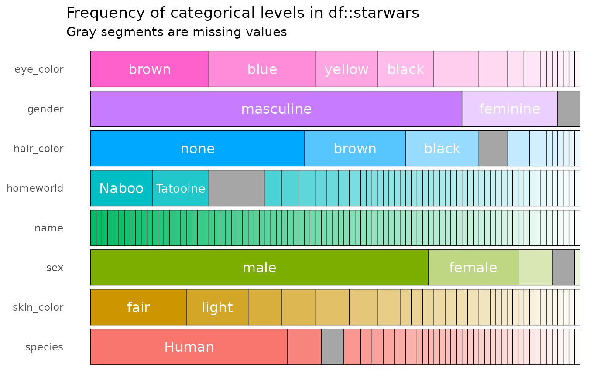
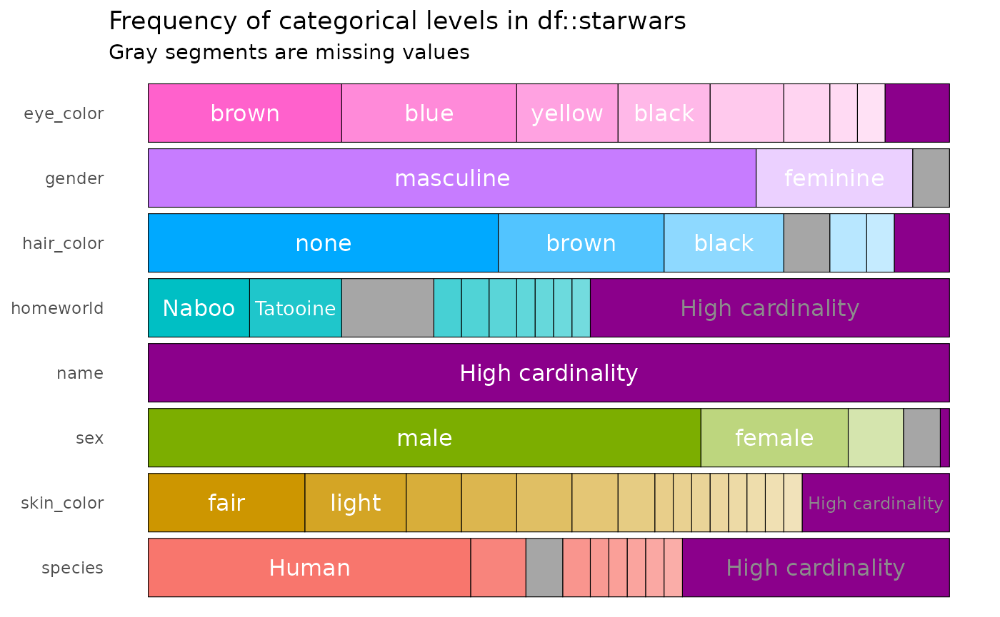

Exploring and visualising categorical features
Source:vignettes/pkgdown/inspect_cat_examples.Rmd
inspect_cat_examples.RmdIllustrative data: starwars
The examples below make use of the starwars from the
dplyr package.
## # A tibble: 6 × 14
## name height mass hair_color skin_color eye_color birth_year sex gender
## <chr> <int> <dbl> <chr> <chr> <chr> <dbl> <chr> <chr>
## 1 Luke Sky… 172 77 blond fair blue 19 male mascu…
## 2 C-3PO 167 75 NA gold yellow 112 none mascu…
## 3 R2-D2 96 32 NA white, bl… red 33 none mascu…
## 4 Darth Va… 202 136 none white yellow 41.9 male mascu…
## 5 Leia Org… 150 49 brown light brown 19 fema… femin…
## 6 Owen Lars 178 120 brown, gr… light blue 52 male mascu…
## # ℹ 5 more variables: homeworld <chr>, species <chr>, films <list>,
## # vehicles <list>, starships <list>
inspect_cat() for a single data frame
inspect_cat() returns a tibble summarising categorical
features in a data frame, combining the functionality of the
inspect_imb() and table() functions. The
tibble generated contains the columns
-
col_namename of each categorical column -
cntthe number of unique levels in the feature -
commonthe most common level (see alsoinspect_imb())
-
common_pcntthe percentage occurrence of the most dominant level
-
levelsa list of tibbles each containing frequency tabulations of all levels
library(inspectdf)
# explore the categorical features
x <- inspect_cat(starwars)
x## # A tibble: 8 × 5
## col_name cnt common common_pcnt levels
## <chr> <int> <chr> <dbl> <named list>
## 1 eye_color 15 brown 24.1 <tibble [15 × 3]>
## 2 gender 3 masculine 75.9 <tibble [3 × 3]>
## 3 hair_color 12 none 43.7 <tibble [12 × 3]>
## 4 homeworld 49 Naboo 12.6 <tibble [49 × 3]>
## 5 name 87 Ackbar 1.15 <tibble [87 × 3]>
## 6 sex 5 male 69.0 <tibble [5 × 3]>
## 7 skin_color 31 fair 19.5 <tibble [31 × 3]>
## 8 species 38 Human 40.2 <tibble [38 × 3]>For example, the levels for the hair_color column
are
# show frequency tibble for `hair_color` column:
x$levels$hair_color## # A tibble: 12 × 3
## value prop cnt
## <chr> <dbl> <int>
## 1 none 0.437 38
## 2 brown 0.207 18
## 3 black 0.149 13
## 4 NA 0.0575 5
## 5 white 0.0460 4
## 6 blond 0.0345 3
## 7 auburn 0.0115 1
## 8 auburn, grey 0.0115 1
## 9 auburn, white 0.0115 1
## 10 blonde 0.0115 1
## 11 brown, grey 0.0115 1
## 12 grey 0.0115 1Note that by default, if missing (NA) values are
present, they are counted as a distinct categorical level. A barplot
showing the composition of each categorical column can be created using
the show_plot() function. Note how missing values are shown
as grey bars:

The argument high_cardinality in the
show_plot() function can be used to bundle together
categories that occur only a small number of times. For example, to
combine categories only occurring once, use:

The resulting bundles are shown in purple.
inspect_cat() for two data frames
To illustrate the comparison of two data frames, we first create two
new data frames by randomly sampling the rows of starwars
and also dropping some of the columns. The results are assigned to the
objects star_1 and star_2:
# sample 50 rows from `starwars`
star_1 <- starwars %>% sample_n(50)
# sample 50 rows from `starwars` and drop the first two columns
star_2 <- starwars %>% sample_n(50) %>% select(-1, -2)To compare the character columns in a pair of data frames, use the
inspect_cat():
inspect_cat(star_1, star_2)## # A tibble: 8 × 5
## col_name jsd pval lvls_1 lvls_2
## <chr> <dbl> <dbl> <named list> <named list>
## 1 eye_color 0.0958 0.450 <tibble [14 × 3]> <tibble [10 × 3]>
## 2 gender 0.00155 0.899 <tibble [3 × 3]> <tibble [3 × 3]>
## 3 hair_color 0.0525 0.255 <tibble [9 × 3]> <tibble [9 × 3]>
## 4 homeworld 0.286 0.214 <tibble [33 × 3]> <tibble [25 × 3]>
## 5 name NA NA <tibble [50 × 3]> <NULL>
## 6 sex 0.00362 0.789 <tibble [4 × 3]> <tibble [4 × 3]>
## 7 skin_color 0.148 0.862 <tibble [24 × 3]> <tibble [24 × 3]>
## 8 species 0.216 1 <tibble [23 × 3]> <tibble [21 × 3]>The tibble returned has the following columns
-
jsd, the Jensen-Shannon divergence: a measure of how different the distribution of levels are between columns with the same name present in both data frames. Values are between 0 and 1 - values closer to 1 indicate bigger differences in distribution. -
pval, p values associated with a modified test of the relative frequencies of levels in columns with the same name present in both data frames.
-
lvls_1andlvl2_2are named list columns containing the frequency tables for each column in the first and second data frame input toinspect_cat()